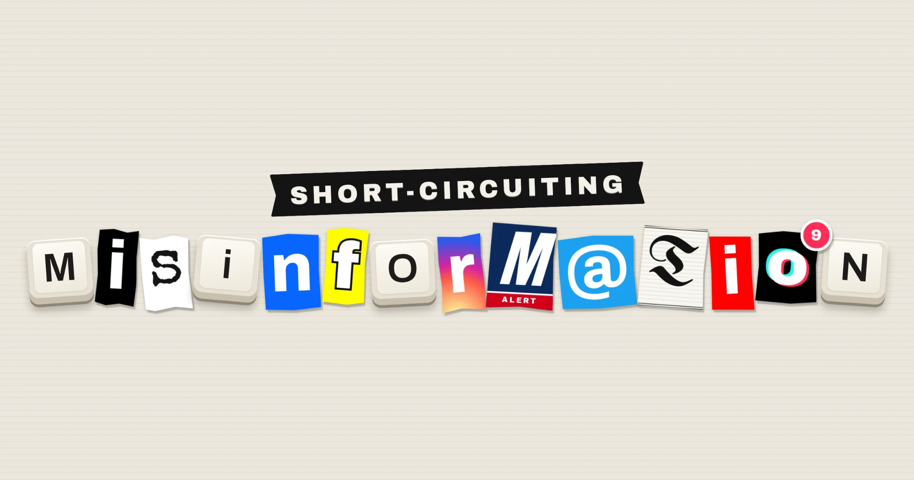

September 27, 2026 · – min read
Short-Circuiting Misinformation
Prebunking teaches people to spot misinformation before it lands. It worked at scale, until the platforms and the government pulled back. Here's what it is, what happened, and where it could live next.

I had the lucky opportunity to attend a lecture by Sander van der Linden through the Climatebase Fellowship I'm a part of, and I was really taken with the work he has done around misinformation, how it works, and how to short circuit its power.
This Moment in Misinformation
Misinformation isn't new, but it has certainly escalated in scope and scale in the United States since the 2016 presidential election. I see this trend as stemming from where people get their news, which has ultimately led to a "feelings over facts" tone in American discourse. Some news outlets, like Fox News, have been pushing misinformation while calling it news for a while (and have had to admit it publicly: they paid $787.5M to Dominion in April 2023 over false 2020 election claims). Many people turn to social media and influencers that they agree with to get their news, which can create its own bubble of unverified information. And on both of these types of platforms, to varying degrees, anyone can claim to be an expert and speak with authority, which makes it hard to discern who the real experts are. I watch Dr. Jessica Knurick's shortform reaction and teardown videos that respond to fear driven influencer videos about food and health misinformation. It's wild to see how many of them there are.
Add to that a more widespread distrust of American government institutions, and information visibly disappearing from U.S. government websites: the National Climate Assessment's home, NOAA's tracker of billion-dollar weather disasters, and the tools that showed which communities climate funding should reach. EDGI counted 847 substantive changes to federal environmental pages in the first six months of 2025, and two thirds of them reduced public access. Past missing information, federal leaders like RFK Jr. express fringe theories on health from the bully pulpit, including anti-vaccination and poorly explained "healthy foods" initiatives. In climate specifically, misinformation campaigns have shifted from what has historically been about the science ("It snowed today, so where's your global warming?"), to the climate solutions ("solar will NEVER work, the sun is only out in the day!").
In digging into misinformation more deeply, I have been struck by how this is actually a 3 part problem, featuring digital literacy, distribution infrastructure, and policy compliance.
What is Prebunking?
Quite simply, if debunking is something that must be done after misinformation is out in the wild (a cure), prebunking is done BEFORE misinformation picks up traction (prevention). The concept of prebunking was developed by psychologists Sander van der Linden and John Cook, whose studies on climate misinformation came out in 2017. It draws on a much older idea of inoculation theory, first tested by social psychologist William McGuire in 1961, at the height of Cold War fears about "brainwashing." This inoculation idea was built around protecting soldiers from enemy propaganda, but spent the next fifty years mostly in academic journals, until social media brought it back to the forefront.
The core tenets of the theory include:
- Inoculation. The idea is to subject everyone to a weakened dose of the misinformation campaign or attack, and then take it apart piece by piece, so that everyone can see how it works. Both parts of this are crucial: just knowing a trick exists doesn't mean you won't fall for it. For example, imagine that your company's IT team sent a fake phishing email to see who clicks, and, if you DID click it, it brings you to a page showing the clues you missed.
- It can be technique-based vs. issue-specific. An issue-specific prebunk warns you about one specific lie or incorrect story. A technique-based prebunk teaches you the trick behind it, which could be used in other stories. To keep our phishing example:
- Issue-specific: "Watch out for the fake email from 'HR' about your bonus." You'll be attuned to bonus related emails in specific, but may miss attacks.
- Technique-based: "Any email that rushes you to act right now is a red flag." That covers the bonus email, a fake invoice, or any other attack that uses this rush method.
Van der Linden actually made a game to illustrate prebunking, called the Bad News game. You start as a nobody with no clout, and the game incentivizes you to become a villainous fake news influencer, where you earn badges for mastering tricks like impersonating experts or stirring up outrage. The goal of the game is to break down the tricks step by step, and since you've done it yourself, you can spot it when someone uses it on you in the real world.
Philosopher Daniel Williams makes two fair critiques of van der Linden's book. First, he believes that the tests that van der Linden uses may measure the wrong thing: people score better at spotting fake headlines after playing the game, but someone who decides everything is fake would score perfectly too. Second, the tricks prebunking teaches aren't unique to misinformation, and can show up in true content as well (like emotional appeals, polarizing messages, and even conspiracy claims). Where I disagree with him is his claim that people are hard to influence, which felt myopic, and didn't take into account long running misinformation campaigns.
Prebunking at Scale
There are interesting examples of big social media and search companies using prebunking on their platforms. Google's Jigsaw team ran short prebunking videos as YouTube ads; one campaign about Ukrainian refugees reached 38 million views across Poland, Czechia, and Slovakia, and a 2024 campaign ahead of the EU elections reached about 120 million users. Meta built a page taking apart common climate myths, which drew about 100,000 visitors a day (it is worth noting that climate misinformation on Facebook was being viewed more than ten times as often). Before the 2020 election, Twitter put a notice at the top of people's feeds warning that results might take days, getting ahead of fraud claims before the slow count could feed them; in its own survey afterward, half the people who saw one said it made them think more critically about what else they were seeing in their feed. In Slovakia, the videos barely worked. Jigsaw first suspected it was because they were dubbed instead of made for local viewers; later focus groups found anti-migrant narratives were already widespread there. Either way, you have to meet your audience where they are.
By early 2025, the politics had shifted. Meta ended fact-checking in the US and Google pulled out of its fact-checking commitments in the EU. Van der Linden says the platforms dismantled their prebunking work as well. The US government pulled back at the same time: the federal cybersecurity agency's misinformation staff were put on leave, and a State Department office working on foreign disinformation was shut down. Those two offices had backed one of van der Linden's lab's own prebunking games.
This dovetails with the platforms' long-standing position that they aren't responsible for what people post on them. Section 230, a 1996 law, says an online service cannot be treated as the publisher of what its users post, so in general, they cannot be sued for user speech. They have frequently used this to shirk responsibility for content moderation, and as the political winds shifted, the teams that might have done it keep shrinking. After Musk bought Twitter, its trust and safety staff shrank by about a third, and its safety engineers by 80%, and Meta cut hundreds of moderation and integrity roles in 2023.
Governments can deliver prebunks too. The US & UK ran what's considered to be an effective prebunk ahead of Russia's invasion of Ukraine. In February 2022, three weeks before Russia invaded Ukraine, the US publicly warned, with the UK backing it, that Russia was planning to fake a video of a Ukrainian attack as its excuse to invade. Van der Linden credited this campaign with stalling the war for a few critical weeks, which he says forced Putin to find a new excuse, forewarning their allies and buying them about two weeks to prepare for Russia's eventual invasion.
If you also take into account the erosion of trust in US institutions during both Trump administrations, it becomes harder to imagine where prebunking would even happen. Who would believe a government warning from the U.S. executive branch now? Even the WHO struggles to reach the people it wants to reach most about vaccination: vaccine skeptics are least likely to trust them.
The message distribution infrastructure is controlled by entities that are no longer trusted as they once were. It belongs to private companies that dropped this work when the political winds shifted, or to a government that has gone rogue in what it chooses to tell its own citizens. The prebunk campaigns reached millions through ads and algorithms, using the same tools that spread the misinformation. Since the platforms owned the reach, when they stopped being interested in promoting prebunking, the reach disappeared as well.
Where do we go from here?
All of this leads to a strong conviction that misinformation is a literacy problem, an infrastructure problem, and a policy problem.
Literacy. Training people to recognize manipulation could be a mandatory compliance issue. Big tech companies already require regular privacy and security training, and New York state already requires banks and insurers to train every employee, every year, to spot phishing and deepfakes (23 NYCRR 500). It is important to remember it's not enough to simply warn about it, you must show people how it works, so that they recognize the patterns. If we already require people to learn how phishing manipulates them, it's easy to extend to teaching them how misinformation does.
Infrastructure. The alternative to the platforms that own the reach is to build something that nobody (or everybody!) owns. There are working alternatives to the main social platforms like Mastodon (run by a nonprofit) and Bluesky (backed by VC), but I know that it's a real challenge to give up the exponential reach of Facebook or Google. The tradeoff is a tricky one, in that owning the infrastructure means giving up reach of the established companies, and renting the reach means depending on someone else's business model.
Infrastructure isn't just on social or news platforms. When NOAA stopped updating its tracker of billion-dollar weather disasters, the nonprofit Climate Central brought it back five months later, run by the same scientist who had led it at NOAA for 15 years. Others have done the same. In April 2025, the University of Minnesota began reviewing vaccine evidence independently so doctors' groups could write their own guidance, two months before the CDC's vaccine advisors were all replaced. Harvard Law School's library copied all 311,000 datasets on data.gov into a public archive. And a volunteer network of librarians and archivists has saved more than 1,200 federal datasets.
Policy. Section 230 covers what users post. It doesn't cover what platforms design, and a prebunk is design: Twitter's election notice was a prompt the platform put at the top of the feed, not a change to anyone's post. Design is also where accountability has actually landed. In August, Meta settled with 51 state attorneys general for about $17 billion over designing Instagram and Facebook to be addictive for teens. The fixes are all product changes: time limits, hidden likes, and a feed that isn't run by the algorithm (though teens have to turn it on themselves). If regulators can require a way to turn off the algorithm, itself a major vector for misinformation, there's a case to be made for requiring a prebunk. That comes with real tradeoffs, and definitely has nuances to be hammered out. The Electronic Frontier Foundation points out that this settlement already requires Meta to verify everyone's age and watch teens more closely, and requiring platforms to show certain messages could potentially start its own free speech fight.
Longer term, we need government institutions that serve their citizens, and news outlets and tech platforms that take responsibility for what they distribute. That's how trust gets rebuilt. And in the short term, we need to get better at telling truth from fiction, and to find the pockets of trust where that can still happen.
The newsletter
Don't miss a post
Sharing thoughts once or twice a month. I care about product, power, data privacy, ethical AI, and art & culture. No spam, unsubscribe anytime.